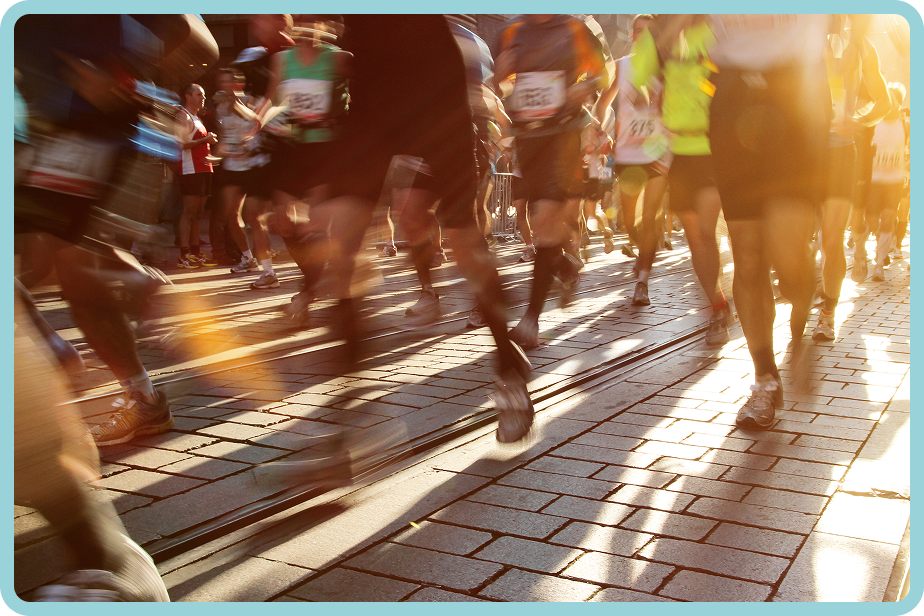
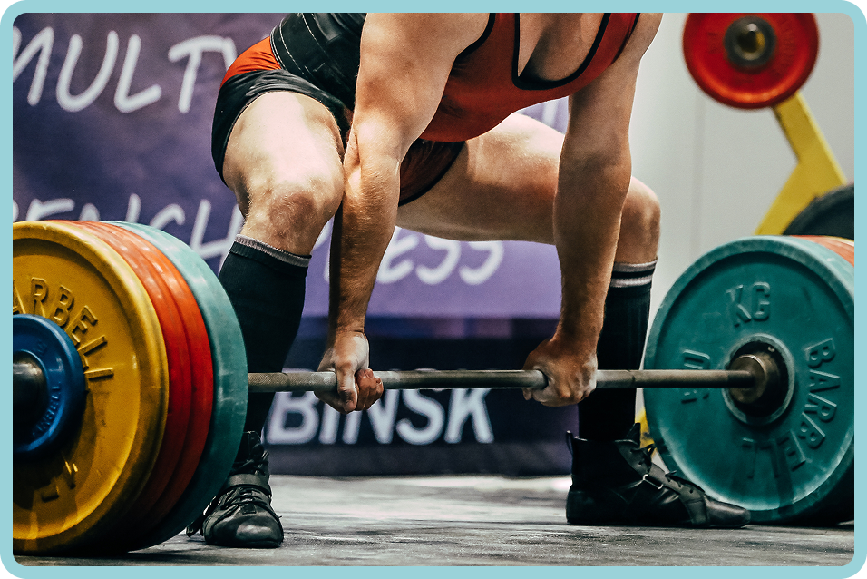
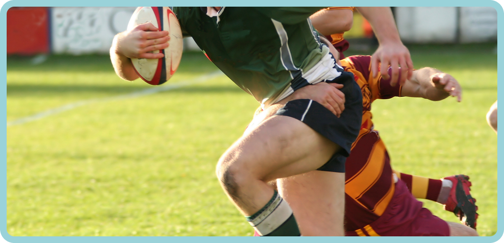

Dopa- Mine
Sport
Benzodiazépine
La Benzodiazépine est utilisée dans les sports de tir pour réduire les micro-tremblements ainsi que le stress. Elle est également très utile pour les médecins lors de chirurgies. Les métiers artistiques, tels que la couture ou la création, peuvent aussi bénéficier de ses propriétés. Et les professions avec une forte pression, comme les étudiants, les enseignants, les bureaucrates ou les journalistes, peuvent profiter de son effet relaxant.

Érythropoïétine
L'Érythropoïétine recombinante (EPO) est utilisée dans les sports d'endurance où il faut fournir un grand effort sur une longue durée. Cela peut être très utile quand on bouge beaucoup, pour les sportifs, mais aussi pour les métiers qui nécessitent beaucoup de déplacements comme le BTP ou le journalisme.

Testostérone
Anabolisant (testostérone), utile dans les sports de puissance pour augmenter la masse musculaire et la force. Elle permet aussi de récupérer plus vite après l’effort ; très utile pour tous les métiers physiques.
Ritaline
La Ritaline est utilisée dans l'E-sport pour permettre aux joueurs d’être plus concentrés. Elle l'est aussi pour les étudiants, les métiers bureaucratiques, ou à chaque fois qu’il y a besoin d’être très concentré pendant longtemps.

Le Glyco-Boost
Le Glyco-Boost, ou l’insuline, est utilisé dans les sports d’endurance et de musculation. C’est une méthode qui permet de stocker le glucose dans les muscles, ce qui augmente leur volume mais aussi leur efficacité et donne de l’énergie en continu. Ce régime Glyco-Boost peut être utilisé par tout le monde et couplé à d’autres traitements. L’insuline, quant à elle, est utile pour les métiers manuels ou avec de fortes activités physiques.